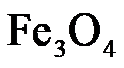
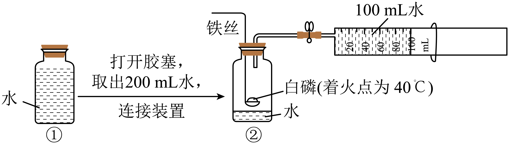

2024年北京市中考化学真题 · 选择题 第21、22、23、24、25题 · 对应解析
21. ①～④所得溶液中，溶质与溶剂的质量比为1：50的是
A. ①B. ②C. ③D. ④
22. ③所得溶液的质量为
A. 104gB. 105gC. 106gD. 108g
23. 下列关于①～④的说法不正确的是
A. ①所得溶液为不饱和溶液B. 若②升温至40℃，溶质质量变大
C. 若向③中加水，溶液质量变大D. 若④升温至40℃，得到不饱和溶液
【答案】21. A 22. B 23. B
【解析】
【21题详解】
A、20℃时，硼酸的溶解度为5.0g，则该温度下，向100g水中加入2g硼酸，能全部溶解，所得溶液中溶质与溶剂的质量比为：2g：100g=1：50，符合题意；
B、②中水的质量为100g，加入硼酸的总质量为：2g+2g=4g，20℃时，硼酸的溶解度为5.0g，则该温度下，4g硼酸能完全溶解，所得溶液中溶质与溶剂的质量比为：4g：100g=1:25，不符合题意；
C、③中水的质量为100g，加入硼酸的总质量为：2g+2g+2g=6g，20℃时，硼酸的溶解度为5.0g，则该温度下，6g硼酸只能溶解5g，所得溶液中溶质与溶剂的质量比为：5g：100g=1:20，不符合题意；
D、④中水的质量为100g，加入硼酸的总质量为：2g+2g+2g+2g=8g，20℃时，硼酸的溶解度为5.0g，则该温度下，8g硼酸只能溶解5g，所得溶液中溶质与溶剂的质量比为：5g：100g=1:20，不符合题意。
故选A；
【22题详解】
③中水的质量为100g，加入硼酸的总质量为：2g+2g+2g=6g，20℃时，硼酸的溶解度为5.0g，则该温度下，6g硼酸只能溶解5g，所得溶液的质量为：100g+5g=105g。
故选B；
【23题详解】
A、由以上分析可知，①中水的质量为100g，加入硼酸的质量为2g，而20℃时，硼酸的溶解度为5.0g，即该温度下，100g水中最多可溶解5g硼酸，则①所得溶液为不饱和溶液，不符合题意；
B、由以上分析可知，②中4g硼酸完全溶解，若②升温至40℃，升温后，硼酸的溶解度增加，溶质质量不变，符合题意；
C、由以上分析可知，③中6g硼酸只能溶解5g，则若向③中加水，硼酸能继续溶解，溶液质量变大，不符合题意；
D、④中水的质量为100g，加入硼酸的总质量为8g，若④升温至40℃，40℃时，硼酸的溶解度为8.7g，即该温度下，100g水中最多可溶解8.7g硼酸，则该温度下，8g硼酸能完全溶解，得到不饱和溶液，不符合题意。
故选B。
24. 下列关于Fe在O2中燃烧的反应叙述不正确的是
A. 放出热量B. 生成黑色固体

C. 反应前后固体质量相等D. 参加反应的Fe与生成物中铁元素质量相等
【答案】C
【解析】
【详解】A、铁在氧气中燃烧放出大量的热，故叙述正确；
B、铁在氧气中燃烧生成黑色固体四氧化三铁，故叙述正确；
C、铁在氧气中燃烧生成四氧化三铁，根据质量守恒定律，反应后生成四氧化三铁的质量等于参加反应的铁丝和氧气的质量之和，故反应后固体质量增加，故叙述错误；
D、根据质量守恒定律，反应前后元素的质量不变，所以参加反应的Fe与生成物中铁元素质量相等，故叙述正确。
故选C。
25. 用如图所示装置进行实验，测定出空气中 约占（按体积计算）。下列叙述不正确的是
约占（按体积计算）。下列叙述不正确的是

A. ②中瓶内空气的体积约为200mLB. 可加热铁丝引燃铜匙中的白磷
C. 白磷的作用是消耗②中瓶内的D. 最终注射器活塞移至约40mL刻度线处
【答案】D
【解析】
【详解】A、根据题意打开胶塞，取出200mL水，②中瓶内空气的体积约为200mL，说法正确，不符合题意；
B、铁具有良好的导热性，可加热铁丝引燃铜匙中的白磷，说法正确，不符合题意；
C、白磷燃烧是与空气中氧气反应，能消耗瓶内的氧气，使容器内压强减小，打开弹簧夹，注射器活塞向左移动，移动的体积为消耗的氧气，说法正确，不符合题意；
D、氧气约占空气体积的五分之一，瓶内空气体积约为 200mL，消耗的氧气约为 40mL，注射器活塞向左移动40mL，最终注射器活塞会移至约 100mL-40mL=60mL 刻度线处，说法错误，符合题意。
故选D。
第二部分
本部分共14题，共45分。
【生活现象解释】